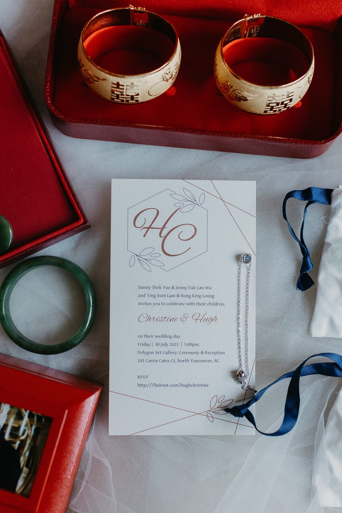
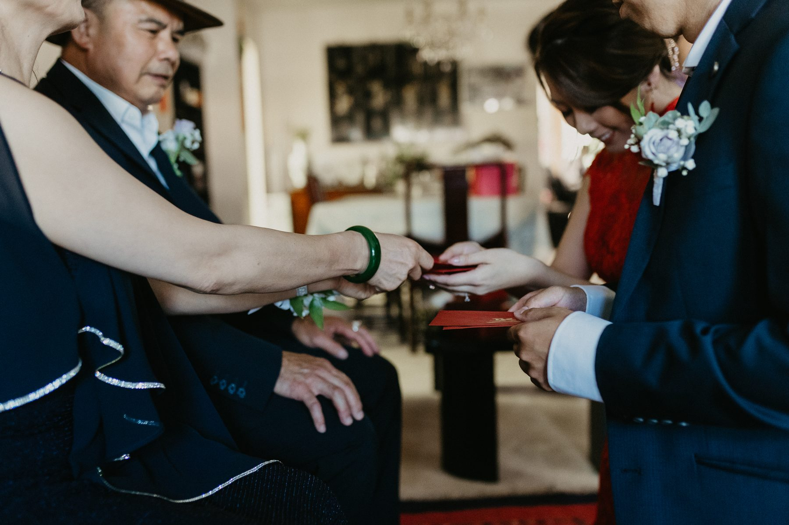
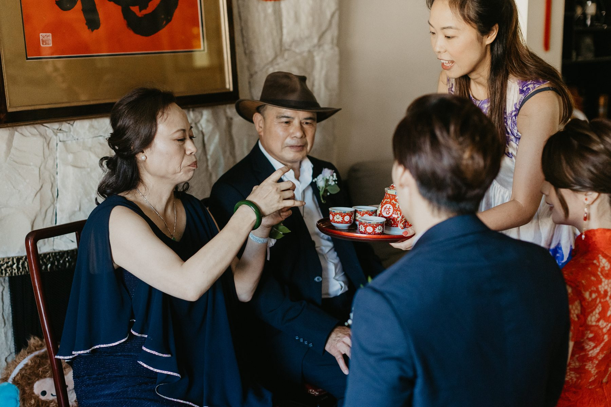
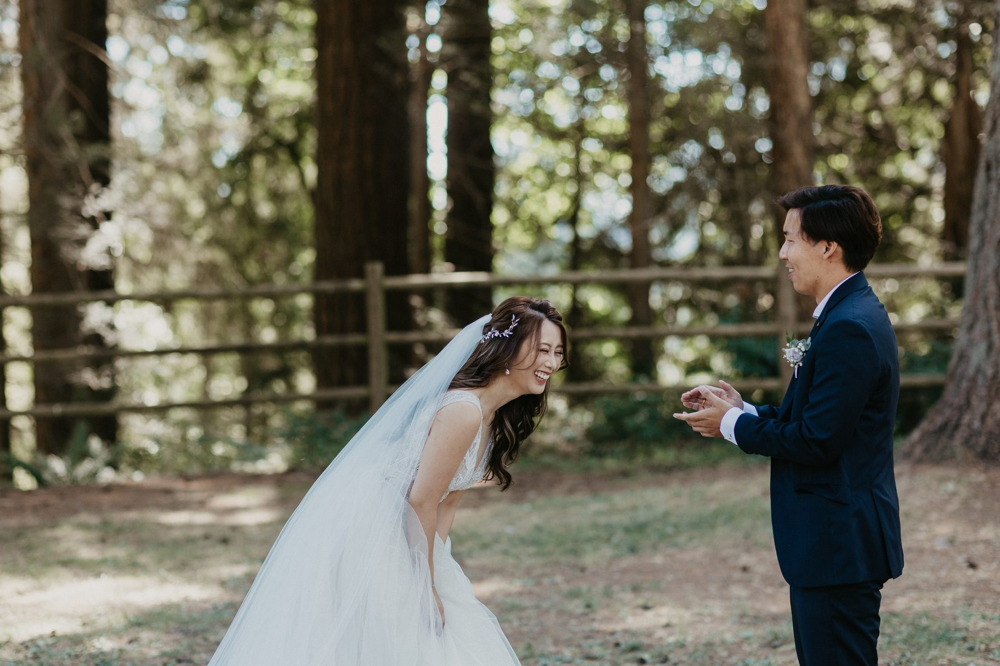
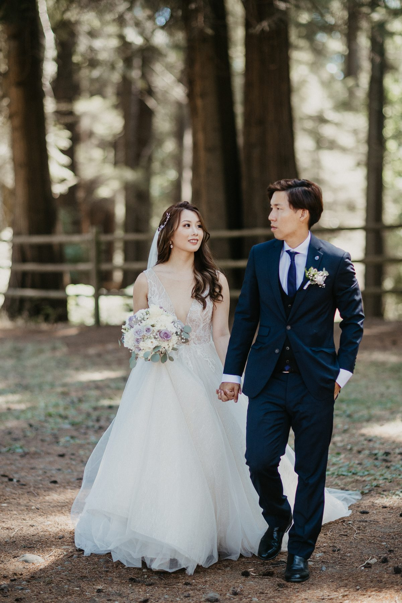
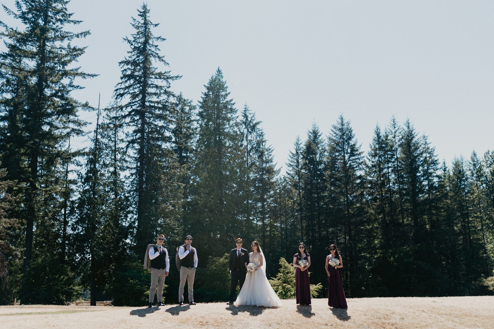
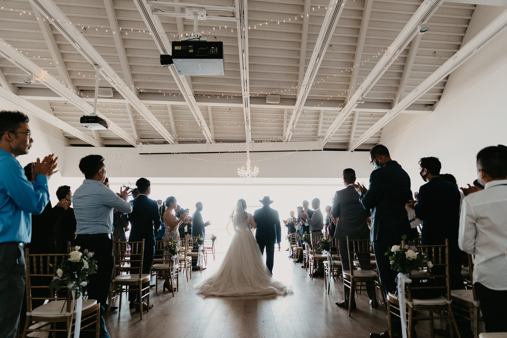
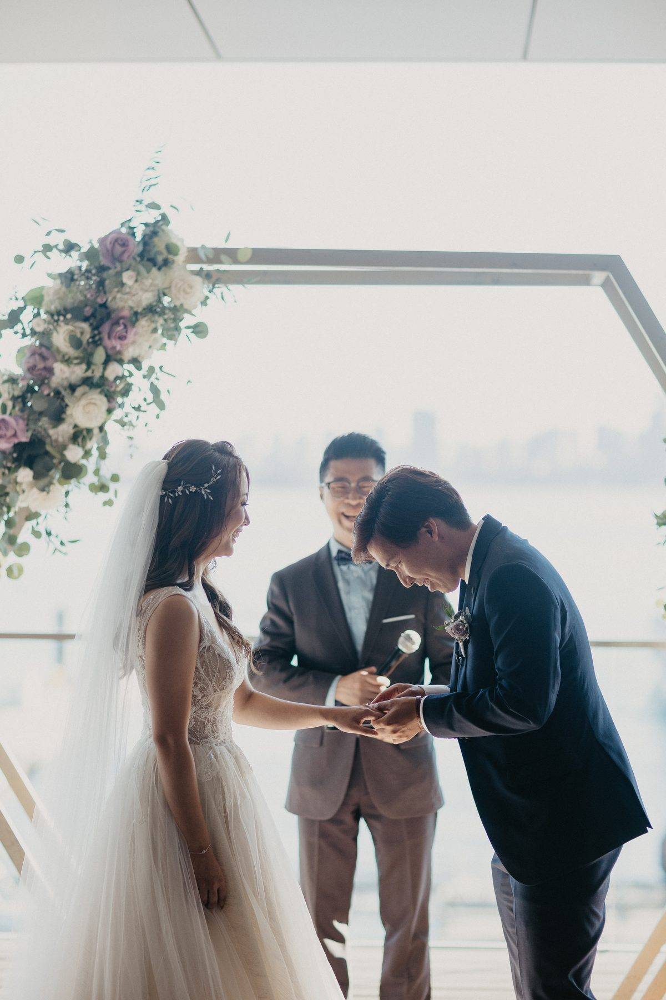
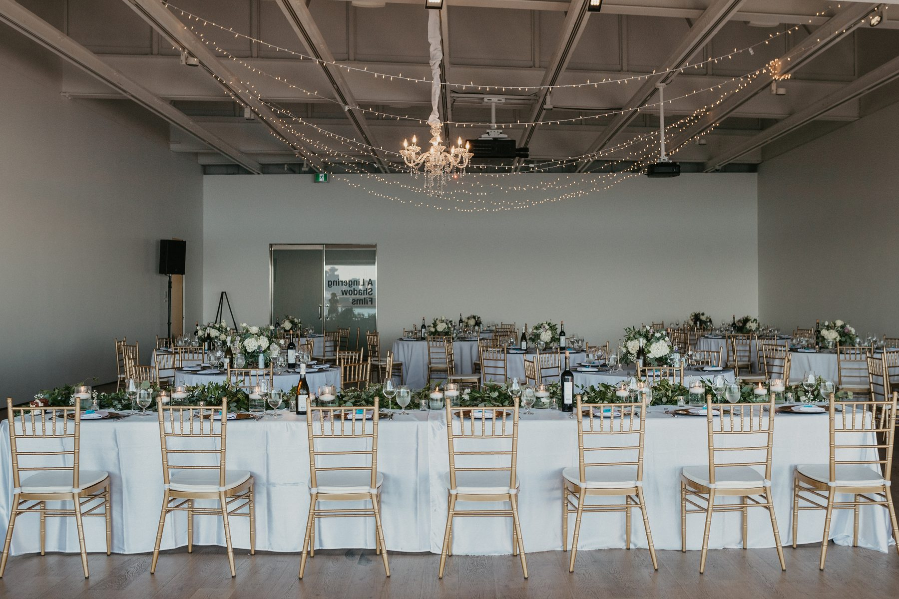
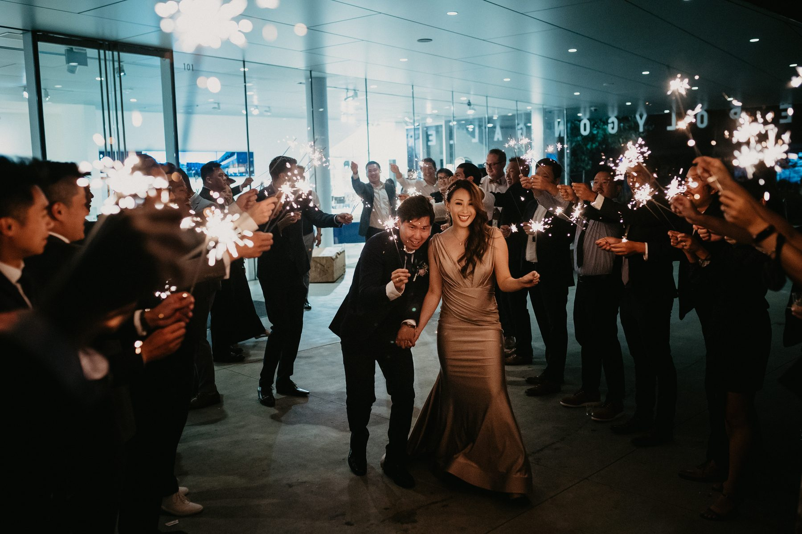

Christine and Hugh got married twice in one day. Most couples with two cultures in the room do.
The first wedding started at seven in the morning in a living room, with red envelopes and a tray of tea. The second started at five in the afternoon inside an art gallery on the North Vancouver waterfront, with the downtown skyline sitting in the window like a painting nobody had to pay for.

If you are looking at The Polygon Gallery for your wedding, or you are trying to fit a tea ceremony and a Western ceremony into the same Friday, this one is worth reading.
The tea ceremony is the part couples under-schedule. Every single time.
It looks short on paper. Kneel, pour, drink, receive. In practice you have door games first, which run long because the groomsmen are having fun and nobody wants to be the person who ends it. Then tea to one set of parents. Then grandparents. Then aunts and uncles who each get their own moment, their own red envelope, their own small speech.

Christine and Hugh gave it a real block instead of a squeezed thirty minutes, and the difference shows in the photos. Nobody is checking a watch. The elders are laughing. Hugh's friends got to be idiots in a driveway for a while before anyone put on a suit.

Here is the practical version. If you are doing a tea ceremony, book coverage that starts earlier than feels reasonable. That morning is usually where the best family pictures of your entire wedding live, and it is the one block that cannot be recreated later.
Between the two ceremonies they drove out to a stand of tall firs and did a first look with nobody else around.

I am generally neutral on first looks. They are a tool, not a rule. But on a two ceremony day they earn their place, because they buy back an hour. You get the portraits done while your hair is still exactly how you want it, and you get to walk into the second ceremony having already had a private minute together.

The forest also did something a hotel corridor cannot. Green everywhere, soft light filtering down, no strangers walking through frame. Then the whole wedding party went up to a lookout with mountains behind them, which took ten minutes and produced the group shot everybody screenshots.

The Polygon sits on the Shipyards waterfront at the bottom of Lonsdale, a mirrored, sawtooth building that looks like it landed there. Inside the event space it is white walls, pale wood floor, and one long stretch of glass looking straight across the harbour at downtown.

That is the whole pitch. You do not have to decorate a gallery. It has already been designed by people who think about walls for a living. Christine and Hugh brought gold chiavari chairs, a hexagonal arch with muted florals, and a string of fairy lights. That was it. The room did the rest.
They also put up an unplugged ceremony sign, and it worked. Look at the aisle photo. No phones. Just faces.

Two honest caveats, because a gallery is not a hotel.
There is no bridal suite waiting for you upstairs. Getting ready happens somewhere else, which means your morning has a drive in it. Build that into the timeline instead of discovering it on the day.
And the waterfront outside is public. The pier next door has picnic tables, food, tourists, a whole crowd out enjoying a July evening. Your sunset portraits will have people in the background. I think that is a feature. It is a real place on a real night, not a rented lawn.
Reception stayed in the same room. Long tables, greenery down the middle, low centrepieces so guests could actually see each other across the table.

Because it was late July, the sun did not quit until well after nine. Speeches ran in daylight. The room stayed bright and clean instead of going orange under tungsten, and that is most of the reason these photos look the way they do.
Then the sky went pink over the water and everyone drifted toward the glass to watch it, which is what happens when your venue points at a view.

Yes. Especially couples doing two ceremonies, and especially couples getting married on a Friday.
Friday weddings are underrated. Vendors are easier to book, the city is calmer, and you gain a full weekend day back for the people who flew in. Christine and Hugh took the Friday and it cost them nothing that mattered.
What The Polygon gave them was a room they did not need to fight, light that lasted until the toasts were over, and a view they did not have to build. What they gave the day themselves was a morning with their parents, unhurried, on the floor of a living room with a tray of tea.
That is the order of operations I would recommend to anyone. Protect the family part first. The pretty part takes care of itself.
SimplyWed Studio is a Vancouver wedding and elopement photography studio. Tell us about your date through the contact page and we will walk through the timeline with you, tea ceremony and all.
← Back to the journal